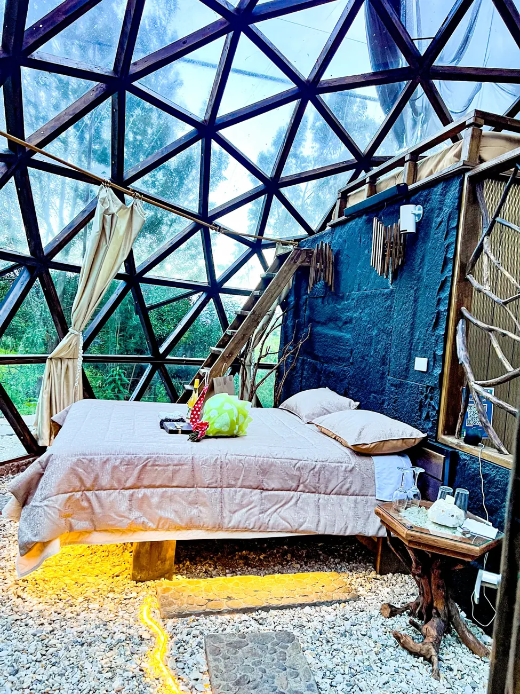

Favorito para parejas
Domo Glamping
Un refugio geodésico entre árboles, con cama queen, baño privado, jacuzzi y chimenea eléctrica que puedes encender o apagar con Alexa.
- Capacidad
- Hasta 4 personas
- Hospedaje + desayuno
- Desde $170
- Experiencia completa
- Desde $220